Es un estilo de los principios del siglo XX, es popular entre lo más bajo de la sociedad estadounidense como ladrones, marineros, prostitutas, etc. Son generalmente temáticas muy limitadas las que se manejan.
Características principales: línea gruesa, paleta de color reducida, colores vivos, formas sencillas, composiciones simples, tatuajes bidimensionales.
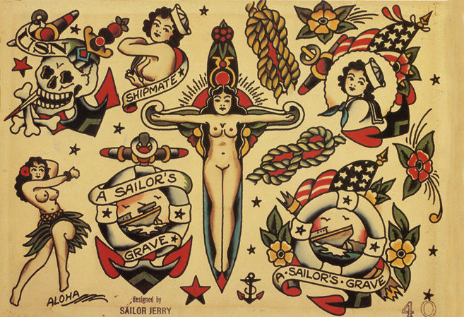Predecesor del tradicional americano, tienen bastantes características en común por lo que parten de la misma historia, es más como una evolución técnica del tradicional, tiene más influencias ahora del comic e ilustración por lo que aumenta la calidad ilustrativa.
Características principales: iconografía y forma igual al tradicional, líneas gruesas, generalmente se mantienen las gamas de color y se añaden los degradados con volumen, uso de tinta blanca (básicamente es el estilo tradicional de forma tridimensional).
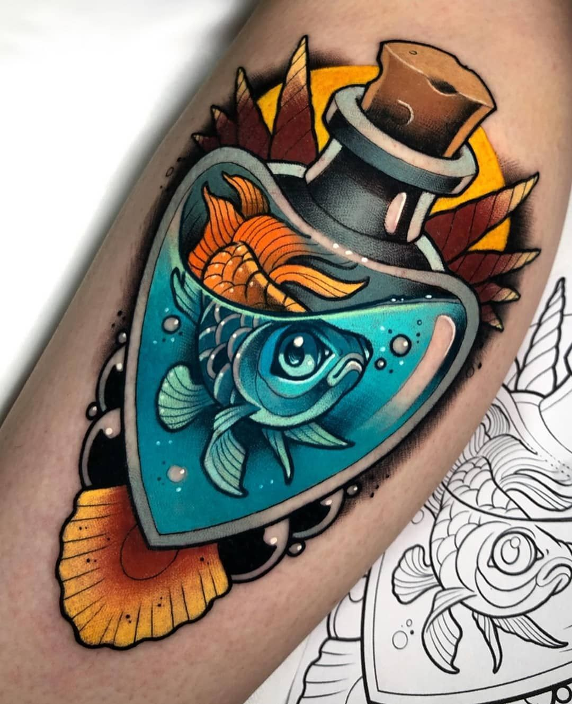El nombre podrá ser similar al old school pero son completamente diferentes, rompe con la paleta de colores, formas e iconografías, tienen influencia en el grafiti, el comic, la ilustración.
Características principales: uso total del volumen, complejas composiciones, son casi completamente realistas solamente que estos añaden una línea gruesa, no tiene limitaciones temáticas.
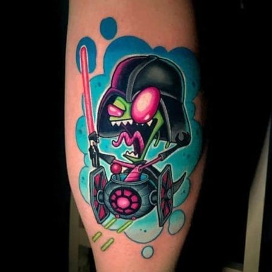Legalizado en japón en 1941 pero relacionado a la Yakuza y a los criminales, es un tatuaje espiritual e íntimo, refleja cuestiones no solo personales sino también sociales, así como religiosas.
Características principales: Iconografía similar al tradicional americano es decir elementos delimitados a este tipo de tatuajes, es un tipo de tatuaje estricto por lo que tanto su acomodo compositivo, así como sus colores obedecen ciertas reglas, hacen uso de animales reales y mitológicos, así como de texturas relacionadas a ambientes naturales como el agua o las nubes para unificar la composición.
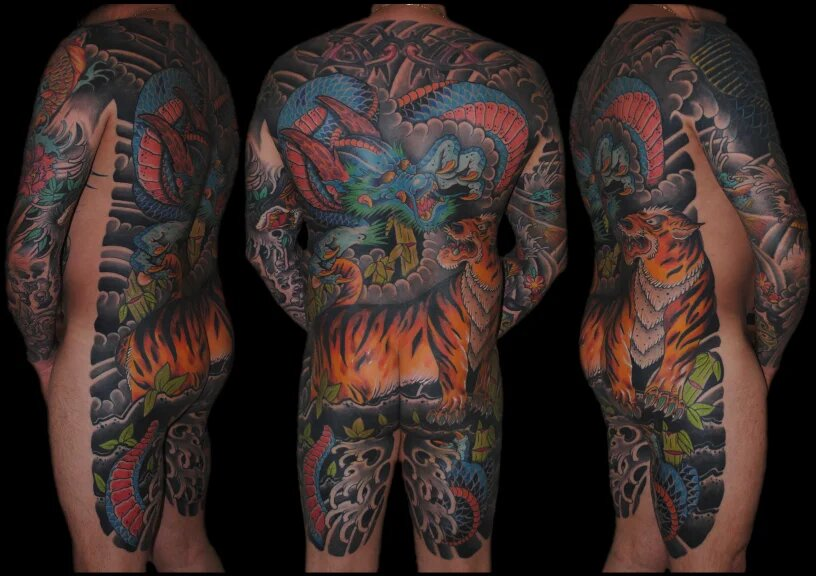Es un estilo bastante ambiguo pues se identifica solo por el uso de la tinta negra, tatuajes predominantes al 100% o casi al 100% el negro, cualquier estilo de tatuaje se puede convertir en un blackwork solo por el uso total del negro por lo que más que un estilo yo lo considero como un sub-estilo de tatuaje pues aunque te hagas un tradicional japones en negro no puede transformarse en un blackwork en su totalidad pues sigue manteniendo compositivamente las características del tradicional japones.
Características principales: uso total o predominante casi completamente del negro.
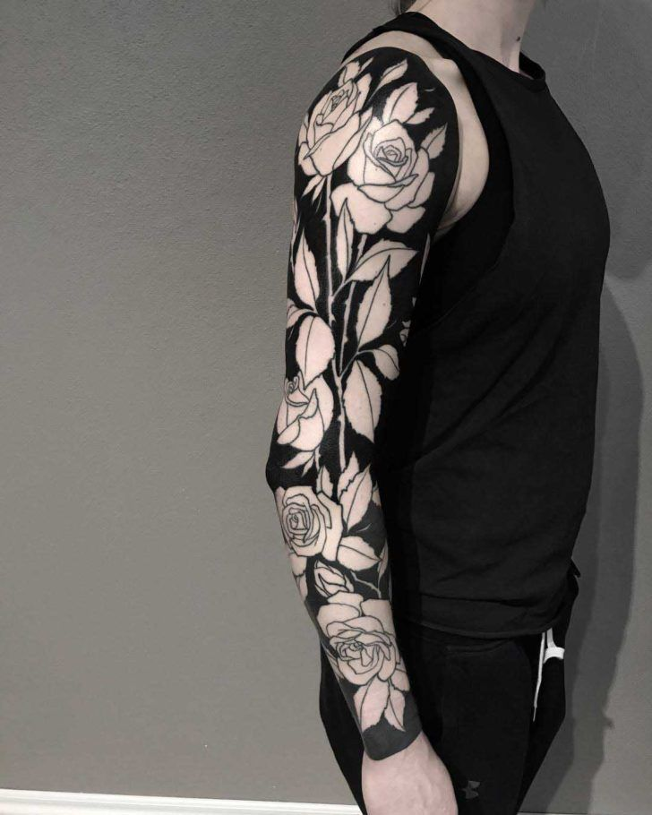Es cubrirse zonas del cuerpo completamente de tinta negra, no hay formas, no hay líneas, puntos o texturas, solamente hay una plasta de negro opaco, es una representación extremista del tatuaje, es la abstracción máxima. Actualmente es uno de los tatuajes más de moda que pueden existir pues es un tatuaje completamente conceptual, es tatuarte por que te gusta no por darle un significado fijo a algo.
Caracteristicas principales: Plastas de tinta negra al 100%.
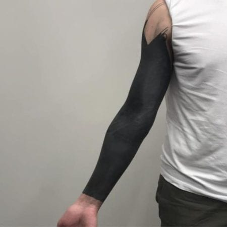Más considerado como una técnica o recurso que como un estilo en si mismo, es más utilizado para unificar grandes piezas que tienen espacios vacíos y en piezas pequeñas para dar texturas.
Características principales: Puntillismo en tinta negra o en algunos casos de algún otro color relacionado a la pieza con la cual se esté combinando.
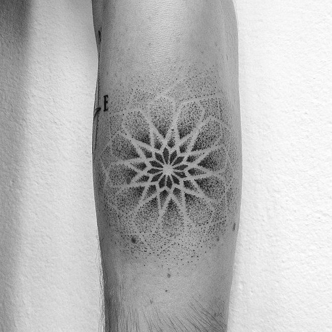Tatuaje que intenta imitar la realidad de un objeto, un paisaje o una persona, los primeros tatuajes realistas se realizaron con tinta negra. Uno de los estilos de tatuaje más complicados (sino es que el más complicado) pues un error puede atacar con la esencia de este que es el ser realista.
Características principales: Imitación total de la realidad ya sea a color o a blanco y negro.
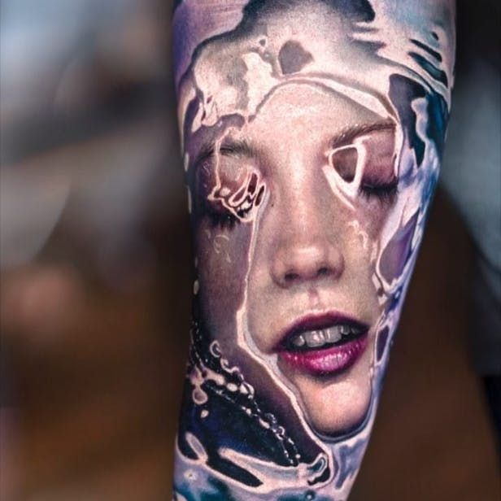Funciona con el mismo principio del realismo solo que a pequeña escala, no es funcional pues naturalmente la tinta de un tatuaje se expande con el tiempo y pierde forma, esto no se ve en el realismo pues es a gran escala pero en trabajos pequeños es sumamente notorio y se ve aun peor en trabajos a color, se ve bien recién hecho pero no después de la curación y es muy probable que se pierda parcial o totalmente detalles y definición, si es a color es casi seguro que se mezclen los colores o se pierdan en su totalidad. No sacrifiques la funcionalidad por el tamaño.
Características principales: Imitación total de la realidad ya sea a color o a blanco y negro en pequeña escala.
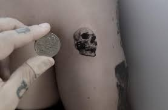Actualmente uno de los estilos más de moda entre el público femenino, en su mayoría los portadores de estas piezas son personas no tan inmersas en el mundo del tatuaje que solo desean realizarse una pieza simple y pequeña.
Características principales: Línea fina sin relleno generalmente en tinta negra (dependerá del gusto del cliente el color), son generalmente pequeñas y hacen referencia a letras de canciones o frases (hacen bastante uso de tipografías cursivas en frases cortas), también pueden ser pequeños tribales simples o flores (naturaleza en general).
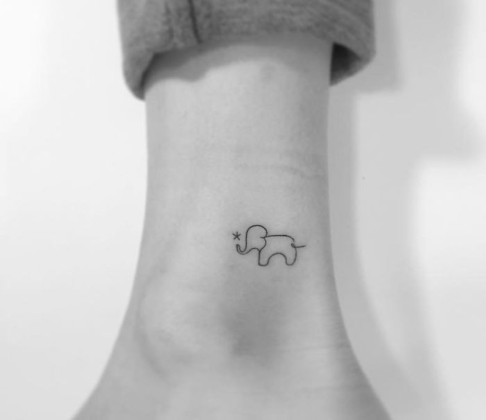Considerada como una leve variante del minimalista, esta corriente hace uso excesivo de la letra con diferentes fuentes tipográficas, no hay formas, solo texto.
Características generales: Textos cortos o largos sin formas, generalmente en tinta negra, pero puede variar según las preferencias del cliente.
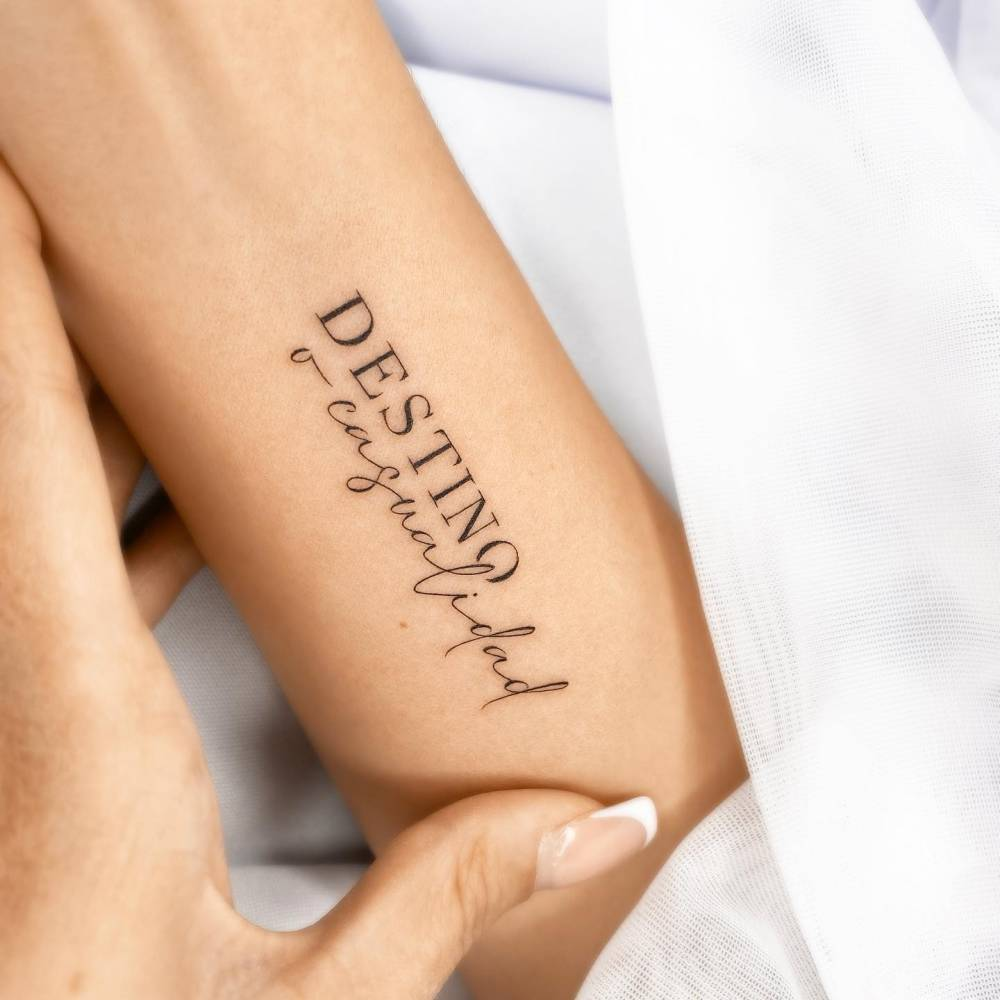Creado en Alemania en el año 1998, hace una combinación de todo un poco tratando de crear un estilo nuevo que no fuera similar a algo ya existente, es tanto así la combinación de tantos elementos que sus mismos creadores lo llaman “basura” (de ahí el nombre claramente), uno de sus creadores lo describe como “realismo y basura”. Es utilizado como una critica social al tatuaje complejo que existía en ese momento.
Características generales: saturación de elementos gráficos, tipográficos y texturas, así como uso de realismo, uso necesario de tinta negra y roja, paleta de colores obviamente reducida y generalmente son piezas sumamente grandes.
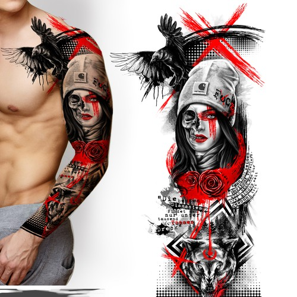Tatuaje inspirado en la ciencia ficción de los 90´s y 80´s, trata de recrear una estética alusiva a películas como Terminator pues hace una simulación como si dentro de alguna parte de tu cuerpo fueras un robot o una máquina o como si tuvieses un alíen.
Características generales: Realismo generalmente en negro con un poco de uso de tinta de otros colores alusivos al acabado que se desee dar.
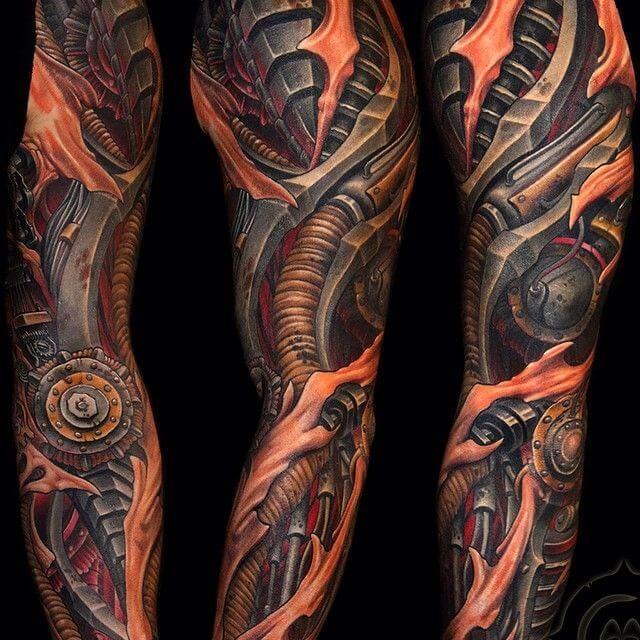Intenta imitar el acabado de las acuarelas con realismo sumando algún otro elemento o línea negra para hacerlo resaltar aún más.
Características generales: Colores brillantes casi pasteles o muchas veces pasteles con combinaciones de minimalismo o tribal pequeño, hacen uso del realismo para darle ese acabado de acuarela a los fondos y hacen uso de tinta negra para agregar algún otro estilo por encima como los que ya mencioné.
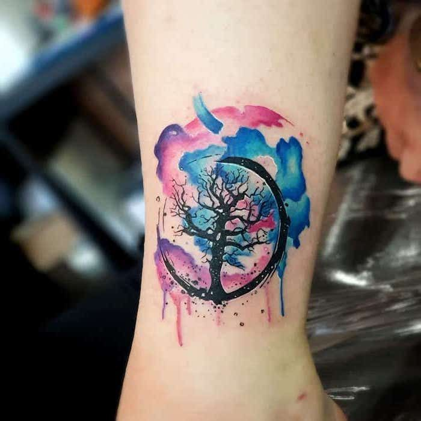Son el estilo de los dibujos animados ya sea una copia fiel de estos o con alguna modificación de los mismos.
Características generales: Línea discontinua dependiendo el dibujo o acabado, son mayormente vistos a color, pero también existen bastantes en blanco y negro (todo dependerá de la elección del cliente).
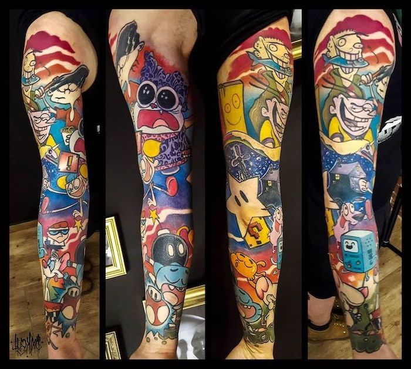Viene desde las tribus zeltas y polinesias (incluyen el tatuaje mahori), servían antiguamente para marcar sus pieles diferenciándose de otras tribus así como también podían tener significados religiosos, místicos, jerárquicos así como de valentía y protección, son tatuajes más conceptuales y su significado dependerá de las formas que estén plasmadas.
Características generales: Generalmente son tatuajes hechos con tinta negra y las formas dependerán de la tribu a la que se hará alusión pues, así como pueden ser formas orgánicas pueden ser figuras básicas en una composición.
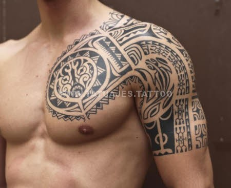Utilizado mayormente como una textura o un complemento en una composición más grande, es utilizado para dar efectos visuales o hacer ilusiones ópticas para rellenar espacios y unificar una composición que tenga separaciones, es decir, se recomienda hacer uso de tatuajes geométricos cuando deseas unir varias piezas dispersas de tatuajes.
Características generales: Uso de distintas tintas de distintos colores dependiendo la o las composiciones centrales, uso de la simetría y elementos básicos como son la línea, el punto y la forma.
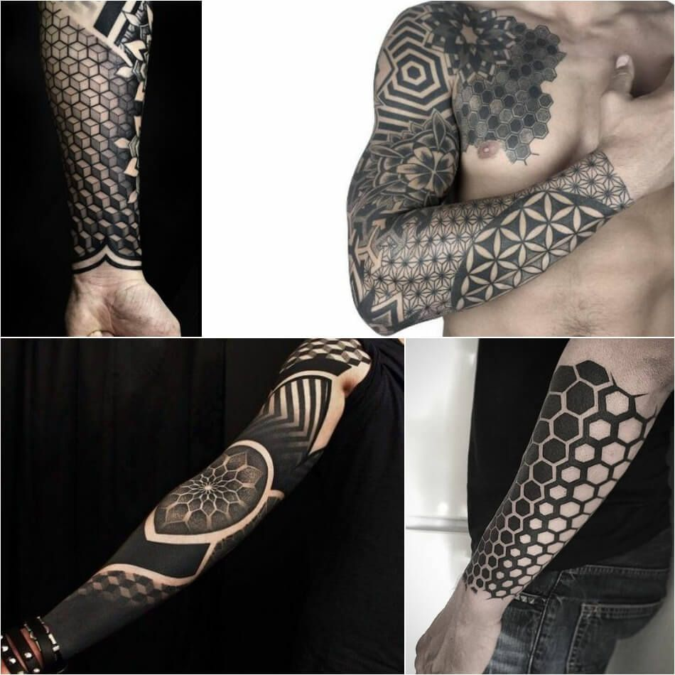Intentan imitar la forma de algo con el uso de figuras básica como lo son las formas poligonales, por lo general son tatuajes no tan grandes así que pueden contar un poco como tatuajes minimalistas.
Características generales: Uso de tinta negra o colores (dependiendo el cliente), línea bastante fina y por lo general no miden demasiado.
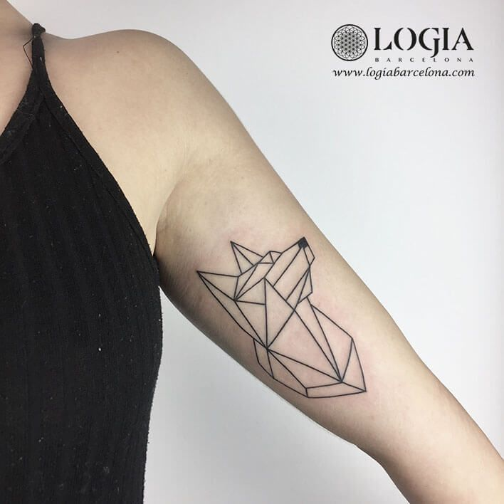Básicamente es un tatuaje mal hecho a propósito, este estilo de tatuaje es un rompimiento a las normas de lo ya establecido por la misma comunidad como la correcta colocación de la tinta, el correcto uso de las agujas y las maquinas, así como el respeto a las normas sanitarias.
Características generales: tener ganas de tatuarte (opcional)
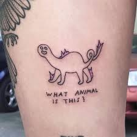Viene del movimiento artístico expresionista con el mismo nombre, al igual que el ignorant es un poco la rebelión contra el mundo del tatuaje, pero en este caso hace alción al tatuaje, aquí si se respetan reglas de sanidad y de colocación de tinta, pero las líneas siguen sin ser uniformes y el uso de las agujas muchas veces es modificado. Hace un momento lo compare con el ignorant pero es algo que no se debería hacer pues el ignorant es solo un anti estilo, una rebelión brutal al tatuaje al contrario del new fauves que busca una extensión de esta corriente artística en el tatuaje.
Características generales: anchos de línea variados, densidad de tinta inconsistente, agrupaciones de agujas atípicas utilizadas como revestimientos o simplemente líneas serpenteantes que son cualquier cosa menos rectas.
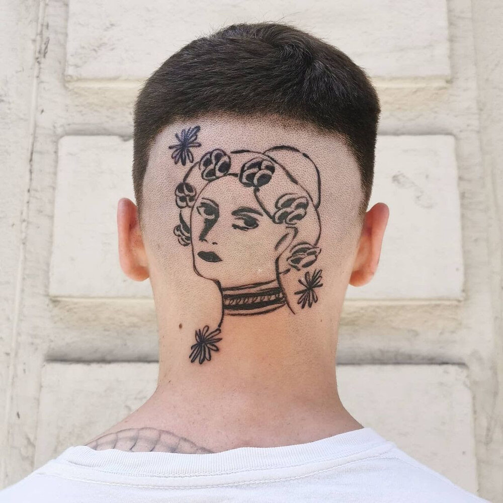